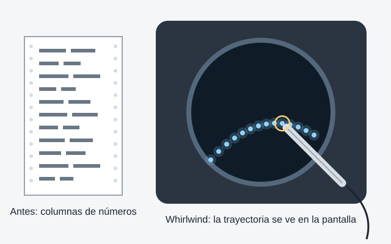

La imagen como salida: la pantalla CRT de Whirlwind

- Limitación anterior
- Los resultados salían en tarjetas perforadas o en listados llenos de números y texto. Para reconocer una forma o una trayectoria había que leer columnas de cifras e imaginar el dibujo, y con tarjetas o cinta de papel la respuesta podía tardar de minutos a días.
- Cambio técnico
- Investigué la pantalla CRT. Las pantallas de video para computadoras digitales se desarrollaron a inicios de los años 50 para la computadora Whirlwind del MIT, que funcionaba desde 1951 y pudo ser la primera en mostrar texto y gráficos en una terminal de video. Hacia 1952 se agregó el lápiz óptico para señalar puntos en esa pantalla.
- Impacto
- Las posiciones, trayectorias y formas se podían reconocer de un vistazo, y la persona veía y actuaba sobre la información en cuanto la computadora la generaba. La misma idea llegó al sistema de defensa aérea SAGE, donde los operadores trabajaban con datos de radar usando un lápiz óptico.
- Ejemplo actual
- Un tablero como Grafana o Google Analytics, que muestra tráfico, ventas o uso de un servidor como gráficas en tiempo real en lugar de tablas de números.
- Imagen de referencia
- “Circular monitor display for Whirlwind”: la pantalla circular de la consola de Whirlwind. Representa este momento porque es uno de los primeros registros de una computadora que entrega su resultado como imagen en una pantalla y no en papel.
- Fuente
- Computer History Museum: Circular monitor display for Whirlwind, dentro de la sala Video Displays. El dato del retraso de minutos a días viene de la sala Xerox Alto del mismo museo.